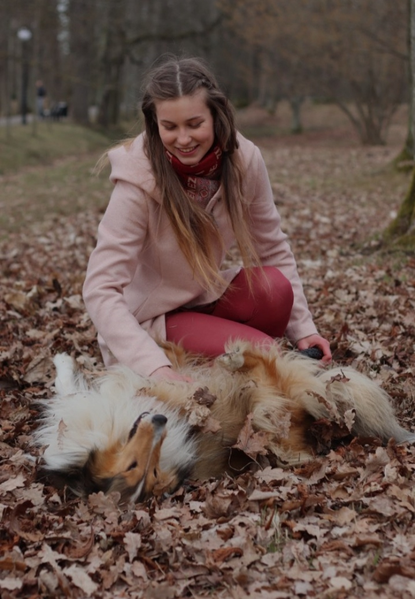

Evidence-based
Recommendations are grounded in nutritional science, accurate calculations, ingredient knowledge, and a clear understanding of the individual dog or product.
Background & Experience
My professional experience includes leading R&D at a Nordic pet food company, where I worked on product development, formulation, nutritional evaluation, and practical production challenges.
I am a food technologist with a Master's degree in Food Science and more than four years of professional experience in dog food R&D, including recipe formulation, ingredient selection, nutritional evaluation, production, and product quality.
My specialist focus is natural and minimally processed dog food, including raw, home-cooked, air-dried, and freeze-dried diets.
My academic work has also focused on dog food composition and processing, supported by laboratory experience in food microbiology and analytical methods.
I work with both pet food businesses and individual dog owners. For businesses, I provide support with product concepts, formulation, nutritional balancing, ingredient selection, production considerations, and existing recipe evaluation.
For dog owners, I provide practical nutrition guidance based on the dog's age, activity level, body condition, current diet, preferences, and individual needs.
My approach
Recommendations are grounded in nutritional science, accurate calculations, ingredient knowledge, and a clear understanding of the individual dog or product.
My work focuses on high-quality animal ingredients and minimally processed feeding approaches, while also considering nutritional balance, safety, and practicality.
There is no single feeding solution for every dog and no single approach that fits every pet food business. Each project or consultation is considered according to its goals, limitations, target customer, production method, or the individual dog's needs.
My academic work includes research specifically focused on dog food quality, composition, processing, and microbiology, alongside laboratory research in biotechnology.
Master's thesis
Research on the impact of manufacturing methods on the analytical composition of dog food and its compliance with labelled values.
View in TalTech Digital Collection →Bachelor's thesis
Research on the microbiological quality of dog food during storage, including microorganisms relevant to product quality.
View in TalTech Digital Collection →Scientific publication
Co-author of a published peer-reviewed research article on engineered hydrogels using yeast exopolysaccharides for embedding cancer spheroids.
View publication →How it started

My interest in canine nutrition began with my first dog Alassie, who was never particularly interested in conventional dry food. This led me to explore different feeding approaches and learn more about how nutrition can influence a dog's digestion, coat, well-being and quality of life.
This interest led me to study Food Science and later shaped my professional direction in dog food development. Today, I apply my scientific background and practical experience both in canine nutrition guidance and in the development of dog food products.
Work with me
Explore professional support for pet food businesses or individual nutrition guidance for dog owners.
Nutrition guidance provided through this website does not replace veterinary examination, diagnosis, or medical treatment. Dogs with diagnosed or suspected health conditions should remain under the care of a veterinarian.